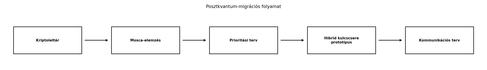

A posztkvantum-migráció nem egy távoli jövőbeli feladat, hanem egy olyan projekt, amelyet a szervezeteknek már ma el kell kezdeniük. A „Gyűjtsd most, fejtsd vissza később” és a posztkvantum-migráció alfejezetben bemutatott harvest-now-decrypt-later támadás miatt a jelenleg rögzített, klasszikus kulcscserével védett forgalom visszamenőlegesen feltörhetővé válhat, ha egy nagy kvantumszámítógép megjelenik. A NIST-szabványosítás és posztkvantum-TLS alfejezetben láttuk, hogy a NIST már szabványosította az ML-KEM (FIPS 203), ML-DSA (FIPS 204) és SLH-DSA (FIPS 205) algoritmusokat, és a hibrid kulcscsere gyakorlati megoldásként terjed a böngészőkben, az SSH-ban és az üzenetküldőkben.
Ebben a záróprojektben egy fiktív közepes vállalat – nevezzük Példa Zrt. – rendszerére készítünk teljes posztkvantum-migrációs tervet. A projekt célja, hogy a tanuló önállóan el tudjon végezni egy kriptoleltárt, kockázatértékelést, prioritási ütemtervet, és prototípusként megvalósítson egy hibrid kulcskombinálót. A hangsúly nem egy konkrét termék beszerzésén van, hanem a kockázatarányos gondolkodáson, a kriptoagilitáson és a hibrid kulcscsere helyes kombinálásán.
A migráció öt fő lépése a következőképpen ábrázolható:

A folyamat lényege: először meg kell tudni, mit kell védeni, majd fel kell mérni, mekkora a kockázat, ezután jöhet a sorrend, a műszaki megoldás és végül a vezetőség meggyőzése. Ez a sorrend nem önkényes: ha nincs pontos leltár, a kockázatértékelés tévedéseket tartalmaz; ha a prioritásokat a vezetőségnek technikai részletekkel terhelve akarjuk eladni, a döntés elhúzódik.
A feladat a következő öt részből áll:
Kriptoleltár készítése. Sorolja fel a Példa Zrt. rendszereit, a rajtuk futó kriptográfiai protokollokat, a kulcstípusokat, a tanúsítványokat és az adatok titkossági idejét. A leltár legyen táblázatba foglalható, és minden rendszerhez adjon meg: (a) milyen kulcscserét használ, (b) milyen aláírást használ, (c) milyen szimmetrikus algoritmust használ, (d) mekkora az adat titkossági ideje évben.
Mosca-elemzés rendszerenként. Végezze el a Mosca-egyenlőtlenség () kiértékelését minden rendszerre, ahol a migráció becsült időtartama, pedig a kvantumgép megjelenéséig hátralévő idő. Az elemzés eredménye alapján sorolja be a rendszereket kockázati kategóriákba.
Prioritási terv. Készítsen négy fázisból álló migrációs ütemtervet. Indokolja meg, miért a kulcscsere (és azon belül is a nyilvános felületek) élvez elsőbbséget, és miért követik az aláírások és a PKI.
Hibrid kombináló prototípus. Valósítson meg Pythonban egy hibrid kulcskombinálót, amely X25519 és (játék) ML-KEM osztott titkokat kombinál egy KDF-fel, a képlet szerint. A kód mutassa be, hogy a két fél ugyanazt a végső kulcsot kapja.
Kommunikációs terv a vezetésnek. Írjon maximum egyoldalas összefoglalót a vállalat vezetőségének, amely üzleti nyelven indokolja a projektet, megadja a fő kockázatokat, az ütemtervet és a várható erőforrásigényt.
A Példa Zrt. rendszereire készített kriptoleltárt az alábbi táblázat foglalja össze. A migrációs időt évnek vesszük, a kvantumgép megjelenéséig hátralévő időt pedig konzervatív évnek (az irodalomban gyakran emlegetnek 10–15 évet; az alsó becslést használjuk).
| Rendszer | Kulcscsere | Aláírás / hitelesítés | Szimmetrikus algoritmus | Titkossági idő (év) |
|---|---|---|---|---|
| Ügyfélportál (TLS) | X25519 | ECDSA P-256 | AES-256-GCM | 10 |
| Külső API-k (TLS) | X25519 | ECDSA P-256 | AES-256-GCM | 5 |
| Belső VPN (IPsec/IKEv2) | ECDHE | ECDSA P-256 | AES-256-GCM | 2 |
| SSH hozzáférés | X25519 | Ed25519 | ChaCha20-Poly1305 | 3 |
| Belső e-mail (TLS) | X25519 | ECDSA P-256 | AES-256-GCM | 3 |
| Adatbázisok (at-rest + TLS) | TLS: X25519 | ECDSA P-256 | AES-256-GCM | 8 |
| Dokumentumkezelő (TLS) | X25519 | ECDSA P-256 | AES-256-GCM | 3 |
| Kód aláírás | – | RSA 2048 | – | 5 |
| Lementések (at-rest) | – | – | AES-256 | 8 |
| Felhő tároló (TLS) | X25519 | ECDSA P-256 | AES-256-GCM | 5 |
A leltárban a szimmetrikus algoritmusokat az egyszerűség kedvéért feltüntettük, bár a posztkvantum-migráció elsősorban a nyilvános kulcsú részt érinti: a Grover-algoritmus elméletben felére csökkenti a szimmetrikus kulcsok effektív biztonsági szintjét (a gyakorlatban kevésbé, mert rosszul párhuzamosítható), ezért hosszú távra az AES-256 ajánlott; az AES-128 a NIST szerint is az 1. posztkvantum biztonsági kategória mércéje, cseréje nem elsődleges (az ajánlások változnak, ellenőrzendő). A Példa Zrt. mindenhol AES-256-ot használ, tehát a szimmetrikus réteg jó.
A tanúsítványok: minden TLS-végpont ECDSA P-256 tanúsítványt használ, a kód aláírás RSA 2048, az SSH Ed25519. A posztkvantum migráció során ezeket ML-DSA vagy SLH-DSA alapú tanúsítványokra kell cserélni, illetve az SSH esetében hibrid aláírásokat érdemes bevezetni.
A Mosca-egyenlőtlenség: ha az adat titkossági igénye () és a migrációs idő () összege meghaladja a kvantumgép megjelenéséig hátralévő időt (), akkor a szervezet már most kockázatnak van kitéve, mert a ma rögzített forgalom a jövőben visszamenőlegesen feltörhető.
A Példa Zrt. esetén év, év. Az egyenlőtlenség rendszerenkénti kiértékeléséből az alábbi ábra egy pillantással mutatja, melyik rendszer sávja lóg túl a határon; a részletes lista az ábra alatt következik.
Megjegyzés. A Mosca-egyenlőtlenség a passzív rögzítésre vonatkozik. A kulcscsere migrációját azonban nem lehet kizárólag erre az elemzésre alapozni: amint egy kvantumgép megjelenik, a még nem posztkvantum kulcscsere azonnal törhetővé válik, tehát a jövőbeli forgalom védelme érdekében minden nyilvános felületű kulcscserét a kvantumgép előtt le kell cserélni. Ezért a gyakorlati prioritásban a kritikus, hosszú titkossági idejű adatokat kezelő rendszerek mellett a széles körben elérhető, gyakran használt kulcscserék is előkelő helyet kapnak.
A migrációt négy fázisra bontjuk, a „kulcscsere előbb, aláírások, PKI” elv szerint.
Fázis 1 (0–6 hónap):
A nyilvános felületek (ügyfélportál, külső API-k) TLS-kulcscseréjének
hibriddé alakítása. A hibrid kulcscsere párhuzamosan futtatja X25519-et
és ML-KEM-768-at, így a kapcsolat biztonságos marad, ha legalább az
egyik komponens biztonságos. Ez a fázis a legnagyobb kockázatú
rendszereket fedi le, és mivel a TLS-könyvtárak már támogatják a hibrid
kulcscserét, a változtatás főként konfigurációs munka.
Fázis 2 (6–12 hónap):
Belső hálózat: VPN, SSH, belső e-mail. Bár ezek titkossági ideje
rövidebb, a mindennapi működés kritikus részei. Az SSH esetében a hibrid
kulcscsere standard megoldás (pl. sntrup761x25519-sha512,
újabb OpenSSH-kiadásokban mlkem768x25519-sha256 – a verziót
ellenőrizni kell). A VPN-eknél az IKEv2 hibrid kulcscsere-támogatását
kell bevezetni.
Fázis 3 (12–24 hónap):
Aláírások és tanúsítványok cseréje: a TLS-tanúsítványok ECDSA-ról
ML-DSA-ra vagy SLH-DSA-ra váltása, a kód aláírás frissítése. Ez a fázis
bonyolultabb, mert a tanúsítványok mérete megnő, és a PKI
infrastruktúrának (CA, OCSP, CRL) is fel kell készülnie. Ahol a
visszamenőleges aláírás-ellenőrzés fontos (kód aláírás), ott a
posztkvantum aláírásra való átállás mellett a hosszú távú biztonság
érdekében a dokumentumokat újra kell aláírni.
Fázis 4 (24 hónap után):
At-rest titkosítások, lementések, felhő tároló. Bár az AES-256
szimmetrikus kulcsok kvantumbiztosak, a kulcsokat védő nyilvános kulcsú
réteg (ha van) és a kulcskezelés lehet sérülékeny. Itt a fő feladat a
kulcsmenedzsment áttekintése és a kriptoagilitás biztosítása.
A prioritási terv lényege: a kulcscsere migrációja azért előzi meg az aláírásokét, mert a harvest-now-decrypt-later támadás a kulcscserét érinti közvetlenül, és a kulcscsere sérülékenysége azonnali veszélyt jelent a kvantumgép megjelenésekor. Az aláírások esetében a veszély abban áll, hogy a támadó a posztkvantum aláírás bevezetése előtt aláírt dokumentumot hamisíthat, de ez egy későbbi, szűkebb körű probléma.
A hibrid kulcscsere lényege, hogy párhuzamosan futtatunk egy klasszikus és egy posztkvantum kulcscserét, majd a két osztott titkot egy KDF-fel kombináljuk. A kombinálás képlete:
ahol a klasszikus (X25519) osztott titok, a posztkvantum (ML-KEM) osztott titok, a transzkript pedig a nyilvános kulcsok, a KEM-kulcs és -rejtett szöveg és a paraméterek sorozatosítása. A KDF legyen HKDF-SHA256.
Algoritmus. 1. Alice és Bob X25519 kulcspárt
generál, kicserélik a nyilvános kulcsokat. 2. Alice ML-KEM kulcspárt
generál, a nyilvános kulcsot elküldi Bobnak. 3. Bob ML-KEM
encaps-et futtat Alice nyilvános kulcsával, megkapja az
osztott titkot
és a ciphertextet
,
amelyet elküld Alice-nek. 4. Alice ML-KEM decaps-et futtat
a saját titkos kulcsával és
-vel,
megkapja ugyanazt a
titkot. 5. Mindkét fél kiszámítja
-et
(X25519) és a transzkriptet. 6. Mindkét fél kiszámítja a végső kulcsot:
.
Biztonsági érvelés. Modellezzük a HKDF-et véletlen orákulumként (vagy feltesszük, hogy a HKDF-Extract az IKM-ben dual-PRF, ahogy a hibrid TLS-elemzések teszik – ellenőrzendő). Tegyük fel, hogy a támadó számára kiszámíthatatlan (a CDH-feltevés miatt), pedig teljesen feltört. Ekkor csak akkor különböztethető meg a véletlentől, ha a támadó lekérdezi az orákulumot pontosan a bemeneten, ez pedig ismeretét, vagyis a CDH megoldását jelentené. Ugyanez igaz fordítva, ha biztonságos és feltört. Ezért a hibrid kombinálás akkor biztonságos, ha legalább az egyik komponens biztonságos. Megjegyzés: egy „PRF, amelynek a kulcsa” típusú érvelés nem illik a HKDF-re (a itt az üzenet-bemenetben áll, a só a kulcs), és az X25519 közös titok csoportelem, nem egyenletes sztring – ezért kell a HKDF-Extract mint véletlenségkivonó.
Az alábbi kód bemutatja a hibrid kombinálót. Az X25519 a
cryptography csomagból származik; a posztkvantum komponenst
egy játék-KEM (ToyKEM) helyettesíti, amely
egy X25519-alapú DH-KEM, és csak az
encaps/decaps adatfolyamot mutatja:
nem ML-KEM és nem posztkvantum-biztonságos, mert a
cryptography 46.0.5 nem tartalmaz ML-KEM modult (a
valóságban itt a FIPS 203 szerinti ML-KEM-768-at kell használni). A
transzkript mindkét X25519-kulcsot, az ek kulcsot és a
ct rejtett szöveget is tartalmazza.
# OKTATÁSI CÉLRA – NEM ÉLES HASZNÁLATRA
from cryptography.hazmat.primitives.asymmetric import x25519
from cryptography.hazmat.primitives import hashes
from cryptography.hazmat.primitives.kdf.hkdf import HKDF
def hkdf(ikm: bytes, info: bytes) -> bytes:
return HKDF(algorithm=hashes.SHA256(), length=32, salt=None, info=info).derive(ikm)
class ToyKEM:
"""Játék-KEM (X25519-alapú DH-KEM): CSAK az encaps/decaps adatfolyamot mutatja,
NEM ML-KEM, és nem posztkvantum-biztonságos."""
@staticmethod
def keygen():
dk = x25519.X25519PrivateKey.generate()
return dk.public_key().public_bytes_raw(), dk # ek, dk
@staticmethod
def encaps(ek: bytes):
eph = x25519.X25519PrivateKey.generate()
ss = eph.exchange(x25519.X25519PublicKey.from_public_bytes(ek))
return eph.public_key().public_bytes_raw(), hkdf(ss, b"toykem") # ct, K2
@staticmethod
def decaps(dk, ct: bytes):
ss = dk.exchange(x25519.X25519PublicKey.from_public_bytes(ct))
return hkdf(ss, b"toykem") # K2
# Klasszikus komponens: X25519
a_priv, b_priv = x25519.X25519PrivateKey.generate(), x25519.X25519PrivateKey.generate()
a_pub, b_pub = a_priv.public_key().public_bytes_raw(), b_priv.public_key().public_bytes_raw()
k1_alice = a_priv.exchange(x25519.X25519PublicKey.from_public_bytes(b_pub))
k1_bob = b_priv.exchange(x25519.X25519PublicKey.from_public_bytes(a_pub))
# "Posztkvantum" komponens (játék-KEM): Alice ek-t küld, Bob encaps-ol, Alice decaps-ol
ek, dk = ToyKEM.keygen()
ct, k2_bob = ToyKEM.encaps(ek)
k2_alice = ToyKEM.decaps(dk, ct)
# Transzkript: mindkét X25519 nyilvános kulcs, az ek és a ct is
transcript = a_pub + b_pub + ek + ct
def hybrid_combine(k1, k2, transcript, info=b"hybrid-demo"):
return hkdf(k1 + k2 + transcript, info)
key_alice = hybrid_combine(k1_alice, k2_alice, transcript)
key_bob = hybrid_combine(k1_bob, k2_bob, transcript)
print("X25519 titok hossza:", len(k1_alice), "bájt")
print("Játék-KEM titok hossza:", len(k2_alice), "bájt")
print("k2 egyezik (encaps/decaps):", k2_alice == k2_bob)
print("Egyezik:", key_alice == key_bob)Kimenet (python3, cryptography 46.0.5, ténylegesen lefuttatva; a kulcsok véletlenszerűek, ezért csak a hosszak és az egyezés közölhető):
X25519 titok hossza: 32 bájt
Játék-KEM titok hossza: 32 bájt
k2 egyezik (encaps/decaps): True
Egyezik: TrueA kód a transzkriptet (a két X25519-kulcs, az ek és a
ct) a HKDF input key materialjához fűzi; ez a gyakorlatban
elfogadható, de a HKDF info paramétere is használható a
kontextuskötésre. Fontos, hogy a végső kulcs hossza 32 bájt, ami
AES-256-hoz elegendő.
A posztkvantum algoritmusok kulcs- és rejtett szöveg méretei lényegesen nagyobbak, mint a klasszikusaké. Példaként (FIPS 203 alapján, az értékeket érdemes ellenőrizni):
A TLS-kézfogásban a hibrid kulcscsere esetén a ClientHello tartalmazza mind az X25519, mind az ML-KEM nyilvános kulcsot, a ServerHello pedig mindkét ciphertextet. Ez a kézfogás méretét körülbelül 1,5–2,5 KiB-tal növeli. A tanúsítványok posztkvantum aláírásra cserélése további több KiB növekedést okozhat; a NIST-szabványosítás és posztkvantum-TLS alfejezetben említett 10–20 KiB-os kézfogásméretek a teljes lánccal együtt értendők.
A méretnövekedés hatása nem csak sávszélesség: a nagyobb kézfogás lassabb a nagy késleltetésű mobilhálózatokon, és a QUIC-nél a nagyobb ClientHello több Initial csomagra oszlik, és a szerver amplifikációs korlátja (a kapott bájtok háromszorosa) miatt a tanúsítványlánc elküldése plusz kört igényelhet; TCP-nél a kezdeti torlódási ablak túllépése okozhat plusz RTT-t. Ezért a migráció során mérni kell a tényleges késleltetést és adatforgalmat, különösen a mobilalkalmazásokban és az IoT-eszközökön.
A vezetőségi összefoglaló célja, hogy üzleti döntéshozók számára érthetővé tegye a projekt indokoltságát. Az alábbi vázlat használható:
Cím: Posztkvantum-biztonsági migráció – miért most kell cselekednünk?
A hibrid kulcscsere már nem csak elmélet. A Chrome és a Firefox
támogatja az X25519MLKEM768 hibrid kulcscserét a
TLS-ben, amely párhuzamosan futtat X25519-et és ML-KEM-768-at, majd a
titkokat KDF-fel kombinálja. A Signal üzenetküldő a
PQXDH elnevezésű hibrid kulcscserét használja, amely
X25519-et és Kybert (ML-KEM elődjét) kombinál, biztosítva a
posztkvantum-titkosságot. Az OpenSSH a
sntrup761x25519-sha512 hibrid kulcscserét kínálja, ahol az
NTRU-alapú sntrup761 és az X25519 párhuzamosan fut; újabb kiadások
ML-KEM-alapú hibridet (mlkem768x25519-sha256) is kínálnak
(a verzió ellenőrzendő). Ezek a példák mutatják, hogy a hibrid
megközelítés gyakorlatilag megvalósítható, és a klasszikus biztonság
megtartása mellett posztkvantum védelmet ad.
„Még nincs kvantumgép, ráérünk.” Ez a leggyakoribb hiba. A harvest-now-decrypt-later támadás miatt a jelenlegi forgalom már most veszélyben van. A migráció hosszú időt vesz igénybe, ezért most kell kezdeni.
Csak a posztkvantum algoritmusra váltás, hibrid nélkül. Ha egy új, kevésbé kiforrott posztkvantum algoritmusra cseréljük a klasszikus kulcscserét, az algoritmus rejtett hibája teljes kitettséget okozhat. A hibrid kombinálás csökkenti ezt a kockázatot, mert a klasszikus komponens továbbra is véd.
A KDF helytelen használata. Például a két titok egyszerű XOR-ja vagy konkatenációjának közvetlen használata kulcsként nem megfelelő, mert a kimenet entrópiája nem feltétlenül megfelelő, és a kontextuskötés hiányzik. Mindig KDF-et kell használni a kombináláshoz.
A tanúsítványok migrációjának elhanyagolása. A hibrid kulcscsere védi a kapcsolatot, de ha a tanúsítvány aláírása klasszikus, a támadó a kvantumgép megjelenése után hamis tanúsítványt állíthat elő (bár ehhez aktív támadás kell). A teljes védelemhez az aláírásokat is posztkvantumra kell cserélni.
A méretnövekedés alábecsülése. A posztkvantum kulcsok és aláírások nagyobbak; ez a kézfogás késleltetését és a tanúsítványlánc méretét növeli. A migráció során teljesítményteszteket kell végezni, különösen mobilhálózatokon.
A kriptoleltár hiánya. Ha nem tudjuk, mely rendszerek milyen algoritmusokat használnak, nem tudjuk a kockázatot felmérni. A leltár az első lépés, és folyamatosan frissíteni kell.
1. feladat (A)
Készítsen kriptoleltárt egy három rendszerből álló kis vállalatra: (a)
webshop TLS-sel, (b) belső VPN, (c) dokumentumkezelő. Adja meg minden
rendszerhez a kulcscserét, aláírást, szimmetrikus algoritmust és az adat
titkossági idejét (saját becslés szerint).
2. feladat (A)
Végezze el a Mosca-elemzést a következő adatokkal:
év,
év. Egy rendszer adatainak titkossági ideje
év. Mennyi
?
Fennáll-e a kockázat?
3. feladat (B)
Tegyük fel, hogy a kvantumgép megjelenéséig hátralévő időt 20 évre
becsüljük. Mely rendszereknél szűnik meg a közvetlen harvest-now
kockázat a Példa Zrt. esetén? Indokoljon.
4. feladat (B)
Módosítsa a Python-illusztrációt úgy, hogy a HKDF használjon fix sót
(pl. 16 bájtnyi nulla), és az info paraméter tartalmazza a
protokollverziót (b"v1"). Ellenőrizze, hogy a két fél
továbbra is ugyanazt a kulcsot kapja.
5. feladat (C)
Modellezze a HKDF-et véletlen orákulumként. Bizonyítsa be: ha a
titok a támadó számára kiszámíthatatlan, míg
és
ismert, akkor a
kimenet a támadó számára egyenletes, kivéve ha a támadó lekérdezi az
orákulumot ezen a bemeneten. Miért nem elég itt a „KDF = PRF”
feltevés?
6. feladat (D)
Egy mobilalkalmazás TLS-kézfogását mérik: jelenleg 5 KiB a kézfogás
mérete, és a késleltetés 3G hálózaton 200 ms. A hibrid kulcscsere +
ML-DSA tanúsítvány bevezetése után a kézfogás mérete 18 KiB-ra nő.
Hogyan becsülné meg az új késleltetést, ha a hálózat sávszélessége 1
Mbit/s, és a szerver válaszideje elhanyagolható? Milyen további
tényezőket kell figyelembe venni?
1. feladat (A)
Példa táblázat:
| Rendszer | Kulcscsere | Aláírás | Szimmetrikus | Titkossági idő |
|---|---|---|---|---|
| Webshop | X25519 | ECDSA P-256 | AES-256-GCM | 7 év |
| Belső VPN | ECDHE | ECDSA P-256 | AES-256-GCM | 2 év |
| Dokumentumkezelő | X25519 | ECDSA P-256 | AES-256-GCM | 3 év |
2. feladat (A)
év. Mivel
,
a Mosca-egyenlőtlenség nem teljesül, tehát nincs közvetlen harvest-now
kockázat ezzel a paraméterbecsléssel.
3. feladat (B)
Ha
év,
év marad, akkor az egyenlőtlenség
,
azaz
.
A Példa Zrt. egyik rendszerének titkossági ideje sem haladja meg a 10
évet, tehát egyik rendszernél sem áll fenn közvetlen harvest-now
kockázat ezzel a nagyon optimista
becsléssel. (Ez jól mutatja, hogy a kockázat erősen függ a kvantumgép
megjelenésének becslésétől.)
4. feladat (B)
Módosított kódrészlet:
# OKTATÁSI CÉLRA – NEM ÉLES HASZNÁLATRA
from cryptography.hazmat.primitives.asymmetric import x25519
from cryptography.hazmat.primitives import hashes
from cryptography.hazmat.primitives.kdf.hkdf import HKDF
import os
alice_priv = x25519.X25519PrivateKey.generate()
alice_pub = alice_priv.public_key()
bob_priv = x25519.X25519PrivateKey.generate()
bob_pub = bob_priv.public_key()
shared_x25519_alice = alice_priv.exchange(bob_pub)
shared_x25519_bob = bob_priv.exchange(alice_pub)
ml_kem_shared_secret = os.urandom(32)
transcript = alice_pub.public_bytes_raw() + bob_pub.public_bytes_raw()
SALT = bytes(16) # fix só (csak demonstráció)
INFO = b"v1"
def hybrid_combine(k1, k2, transcript):
hkdf = HKDF(algorithm=hashes.SHA256(), length=32, salt=SALT, info=INFO)
return hkdf.derive(k1 + k2 + transcript)
key_alice = hybrid_combine(shared_x25519_alice, ml_kem_shared_secret, transcript)
key_bob = hybrid_combine(shared_x25519_bob, ml_kem_shared_secret, transcript)
print(key_alice.hex())
print(key_bob.hex())
print(key_alice == key_bob)A kimenetben a két kulcs egyezik (True). A fix só és az
info biztosítja a kontextuskötést és a
domain-szeparációt.
5. feladat (C)
Bizonyítás (véletlen orákulum-modellben). Legyen
véletlen orákulum, a kimenet
,
ahol
és
a támadó számára ismert,
pedig (a CDH-feltevés szerint) kiszámíthatatlan. A véletlen orákulum
minden új bemeneten egyenletes, a többitől független értéket ad. Amíg a
támadó nem kérdezi le
-t
pontosan a
bemeneten,
a támadó nézetétől független egyenletes érték, tehát
megkülönböztethetetlen a véletlen
bites sztringtől. Legyen
az az esemény, hogy a támadó mégis lekérdezi ezt a bemenetet. Ha
valószínűsége
és a támadó
orákulum-lekérdezést tesz, akkor a redukció (egy DH-ellenőrző
orákulummal, a „gap” CDH-feltevésben – jelölve)
valószínűséggel kiválasztja a lekérdezések közül a helyeset, és abból
-et,
vagyis a CDH megoldását kapja. A megkülönböztetés előnye tehát
legfeljebb
,
ami elhanyagolható. ∎
Miért nem elég a „KDF = PRF” feltevés? A PRF-állítás az alakra szól, ahol a titok a kulcs. A HKDF-Extract kulcsa viszont a só (itt nulla vagy fix), a titkok az üzenet-bemenetben állnak; ehhez az kell, hogy a HMAC az üzenet-bemenetében is (dual-)PRF vagy véletlenségkivonó legyen, vagy a véletlen orákulum-modell. Továbbá az X25519 közös titok nem egyenletes 32 bájtos sztring, hanem csoportelem-kódolás, ezért a „ egyenletes” feltevés sem teljesül; ezt a HKDF-Extract kivonó szerepe hidalja át.
6. feladat (D)
Az adatátviteli idő a méret és a sávszélesség hányadosa. A kézfogás
mérete növekedése:
KiB
bit. 1 Mbit/s sávszélesség mellett a többletidő
s
ms. Tehát az új késleltetés nagyjából
ms, feltéve, hogy a hálózat egyéb késleltetései (RTT,
szerverfeldolgozás) változatlanok. További tényezők: a
szerver CPU-ideje az új algoritmusok miatt nőhet, a mobilhálózat
csomagvesztése és újraküldései a nagyobb csomagok esetén aránytalanul
növelhetik a késleltetést, és ha a szerver válasza meghaladja a kezdeti
torlódási ablakot (tipikusan 10 szegmens ≈ 14 KiB), egy teljes RTT-vel
nő a kézfogás ideje – ez 3G-n akár nagyobb, mint a 106 ms-os átviteli
többlet. A gyakorlatban érdemes valós méréseket végezni.
A posztkvantum-migráció első lépése a kriptoleltár: minden rendszerre fel kell mérni a kulcscserét, aláírást, szimmetrikus algoritmust és az adatok titkossági idejét. A Mosca-egyenlőtlenség () megadja, mely rendszereknél áll fenn harvest-now-decrypt-later kockázat: ha az adat titkossági ideje és a migrációs idő összege meghaladja a kvantumgép megjelenéséig hátralévő időt, azonnali lépések szükségesek. A prioritási sorrendben a kulcscsere megelőzi az aláírásokat: a hibrid kulcscsere párhuzamosan futtatja a klasszikus (X25519) és a posztkvantum (ML-KEM-768) komponenst, majd a titkokat képlettel kombinálja. Ez akkor biztonságos, ha legalább az egyik komponens biztonságos, feltéve, hogy a HKDF véletlen orákulumként (vagy dual-PRF-ként) viselkedik. A posztkvantum algoritmusok nagyobb kulcs- és aláírásméretei megnövelik a TLS-kézfogás és a tanúsítványlánc méretét, ami teljesítményproblémákat okozhat. A migrációt négy fázisra kell bontani, és a vezetőséget üzleti kockázatokról, nem technikai részletekről kell meggyőzni. Továbbvitt eredmény: a kriptoleltár, Mosca-elemzés, hibrid kombinálás és prioritási logika a A kriptográfia fogalmi térképe és döntési fája alfejezetben a teljes kriptográfiai gondolkodás részeként jelenik meg.
Az alfejezet a „Gyűjtsd most, fejtsd vissza
később” és a posztkvantum-migráció és a NIST-szabványosítás és posztkvantum-TLS
alfejezetekre épít. A Mosca-egyenlőtlenség, a hibrid kulcscsere elve és
a FIPS 203 szerinti ML-KEM paraméterek a NIST és az IETF nyilvános
dokumentációiból származnak. A megadott konkrét méretek (ML-KEM-768
nyilvános kulcs 1184 bájt, ciphertext 1088 bájt; ML-DSA-65 aláírás 3309
bájt) és a böngészők, Signal, SSH hibrid implementációi a jelenlegi
szabványtervezetekből és bejelentésekből származnak, ezért a pontos
értékeket a felhasználónak érdemes ellenőriznie a friss dokumentációban.
A Python-illusztráció a cryptography csomag jelenlegi
dokumentált API-ját használja; a csomag ML-KEM támogatásának hiánya
miatt a posztkvantum komponenst játékosztály szimulálja.